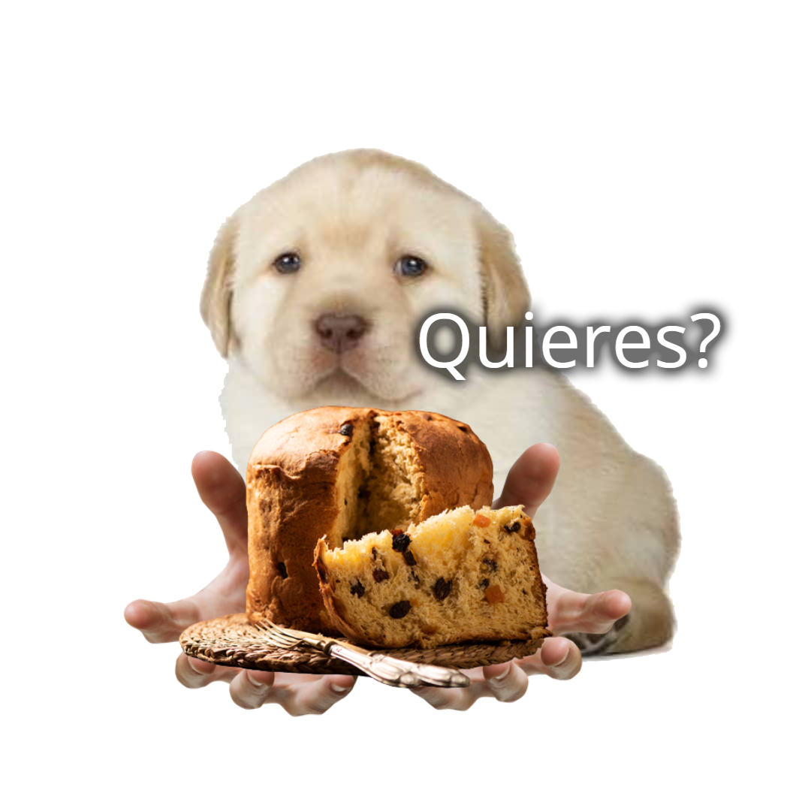

Por falta de espacio en la anterior carta, me vi obligado a
seguir el texto acá jeje. Ya 5 navidades juntos, el tiempo
se pasa volando... Lamento mucho no pasarla ahí con vos, tal
vez el siguiente año sí :( Sin lugar a duda el que estés en
mi vida es el regalo que jamás nadie podría igualar, me encantaría
correr a vos para abrazarte y comerte a besos durante toda la noche y
POOOP por descuidada, te robé un beso ʕ•́ᴥ•̀ʔっ♡ Escribo
ésto un 6 de diciembre mientras vos haces tus cosas, te extraño y me
pone tan contento cuando me hablas.
***Supuestamente podrías
hacer scroll, SE SUPONE***
Esta noche el cielo va a
estar lleno de fuegos artificiales y globos incendiarios, pero ninguno
de ellos son tan brillantes ni coloridos como vos, mi estrellita ☆☆☆.
Te amo demasiado y te felicito por encontrar este secreto (mas te vale
que sin mi ayuda ฅ^•ﻌ•^ฅ akerosa). Que pases una linda navidad amor,
comé mucho y apreta a umita que AFUERA HAY BOMBAS
┏(｀ー´)┛ Gracias
por leerme dulzura, te amo te amo TE AMO, cambio y corto. TE AMO (づ￣ ³￣)づ*♡
